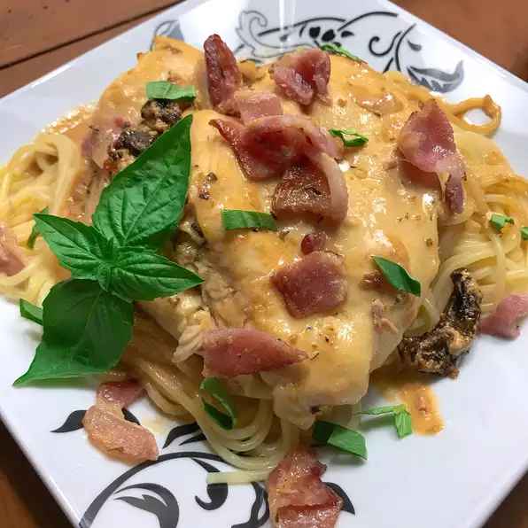

Marry Me Chicken

Marry Me Chicken
They say the way to someone's heart is through their stomach, and this chicken dinner is worthy of a marriage proposal!
Ingredients
- 1 1/2 pounds boneless chicken breast halves
- 2 tablespoons butter
- 3 cloves garlic, minced
- 1/2 teaspoon dried oregano
- 1/4 teaspoon ground thyme
- 1/2 cup chicken broth, divided
- 1/2 pound bacon
- 16oz angel hair pasta
- 1 tablespoon all purpose flour
- 1/2 cup freshly shaved parmesan cheese
- 1/4 cup whipping cream
- 1/4 cup chopped sun dried tomatoes
- 1 pinch red pepper flakes
- salt to taste
Steps
- Preheat the oven to 350 degrees F (175 degrees C).
- Place chicken breasts on a flat work surface. Slice horizontally through the middle, being careful not to cut all the way through to the other side. Open the 2 sides and spread them out like an open book to butterfly.
- Melt butter in a large, oven-safe skillet over medium-high heat. Add garlic, oregano, thyme. Saute until fragrant, about 30 seconds. Add chicken and cook until golden brown but not fully cooked, 3 to 4 minutes per side. Pour 1/4 cup chicken broth into the skillet.
- Bake in the preheated oven until chicken is no longer pink in the centers and juices run clear, about 15 minutes.
- Meanwhile, place bacon in a large skillet and cook over medium-high heat, turning occasionally, until evenly browned, about 10 minutes. Drain bacon slices on paper towels and let cool enough to handle, about 5 minutes; chop.
- At the same time, bring a large pot of lightly salted water to a boil. Cook angel hair pasta in the boiling water, stirring occasionally, until tender yet firm to the bite, 4 to 5 minutes. Drain and keep warm.
- Remove skillet from the oven and transfer chicken to a plate, reserving juices in the skillet. Keep chicken warm and place skillet on the stovetop.
- Whisk flour into the skillet over medium heat. Add remaining chicken broth, Parmesan cheese, and whipping cream. Whisk until combined. Add sun-dried tomatoes, red pepper flakes, and salt. Add bacon and chicken back into the skillet. Serve on top of hot cooked pasta.
Return Home